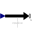
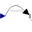
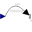

ResolveInFrameBEnumeration to define the frame in which an absolute vector is resolved (world, frame_b, frame_resolve) |
Information
This information is part of the Modelica Standard Library maintained by the Modelica Association.
| Types.ResolveInFrameB. | Meaning |
|---|---|
| world | Resolve vector in world frame |
| frame_b | Resolve vector in frame_b |
| frame_resolve | Resolve vector in frame_resolve (frame_resolve must be connected) |
Enumeration Literals (3)
| world |
Resolve in world frame |
|---|---|
| frame_b |
Resolve in frame_b |
| frame_resolve |
Resolve in frame_resolve (frame_resolve must be connected) |
Used in Components (5)
|  |
Modelica.Mechanics.MultiBody.Forces External force acting at frame_b, defined by 3 input signals and resolved in frame world, frame_b or frame_resolve |
|  |
Modelica.Mechanics.MultiBody.Forces External torque acting at frame_b, defined by 3 input signals and resolved in frame world, frame_b or frame_resolve |
|
Modelica.Mechanics.MultiBody.Forces External force and torque acting at frame_b, defined by 3+3 input signals and resolved in frame world, frame_b or in frame_resolve |
|
|
Modelica.Mechanics.MultiBody.Forces.Internal External force acting at frame_b, defined by 3 input signals |
|
|  |
Modelica.Mechanics.MultiBody.Forces.Internal External torque acting at frame_b, defined by 3 input signals |